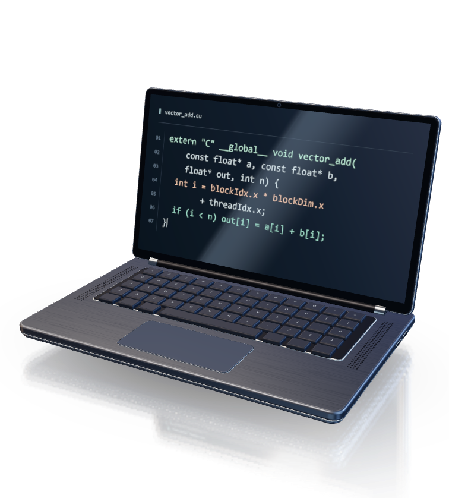

At the keyboard.
A CUDA kernel adds two arrays, one pair of numbers at a time.
vector_add.cu
A Rust and LLVM path from CUDA to Qualcomm Hexagon.
__global__ void vector_add(const float* a,
const float* b, float* out, int n) {
int i = blockIdx.x * blockDim.x + threadIdx.x;
if (i < n) out[i] = a[i] + b[i];
}Source-to-simulator verifiedBounded FP32 vector add. Broader CUDA compatibility remains planned.
Reuse supported CUDA for local AI, starting with Snapdragon X2 Elite.
See the current progressScroll down with a line of CUDA as the compiler turns it into instructions for Hexagon.

A CUDA kernel adds two arrays, one pair of numbers at a time.
vector_add.cu
Follow the addition as it leaves the editor. Clang reads the source and identifies the supported kernel.
out[i] = a[i] + b[i];
The frontend records the two inputs, the output and their lengths. Rust checks the operation before lowering.
Operation::Add
The addition becomes two loads, a floating-point add and a store. LLVM gives each intermediate value a name.
%sum = fadd float %av, %bv
The Hexagon backend selects an add that works on physical registers and packs it with memory operations.
r3 = sfadd(r3,r4)
The C caller passes pointers to both input arrays and the output buffer. The compiled Hexagon routine reads the inputs and writes their sums.
cuda_npu_add(a, b, out + 1);
The last bytes land on an illustrated NPU. This vector-add build passed on the Hexagon v75 simulator.
03 44 03 eb
out[i] = a[i] + b[i];One thread adds a pair of values. Clang reads the kernel.
Operation::AddThe frontend records the buffers and verifies their bounds.
%sum = fadd float %av, %bvTwo loads feed a floating-point addition. A store writes the result.
r3 = sfadd(r3,r4)The backend selects the native floating-point add.
cuda_npu_add(a, b, out + 1);The C caller passes the two input pointers and a pointer to the output.
03 44 03 ebThe NPU illustrates the hardware destination. This vector-add build passed on the Hexagon v75 simulator.
The release goal: local inference with documented compatibility and measured performance.
CUDA source and versioned PyTorch/ONNX adapters feed a shared IR and runtime.
Rust and C/C++ interfaces for vision, language, speech and multimodal pipelines.
Qualified hardware, explicit fallback and published correctness, latency and throughput evidence.
Bounded phases 0 through 3 are complete. Physical MLP execution exists; phase 4 qualification remains open.